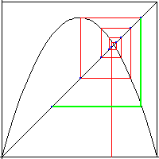
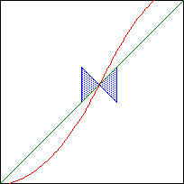

| A fixed point is unstable if nearby points move away from the fixed point under graphical iteration. |
|  |
| Click the picture for an animation. |
| A fixed point is unstable if at the fixed point the tangent line to the graph lies outside the region between +45° and -45°. |
| That is, its slope is greater than +1 or less than -1. |
| The region between these lines is shaded in blue. If the graph crosses the diagonal outside the blue region (on both sides), the fixed point is unstable. |
|  |
Return to Fixed Points.